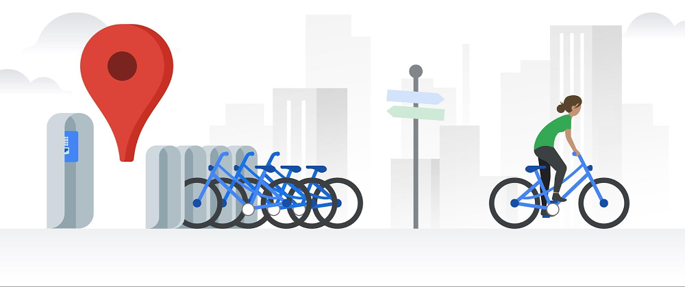

Cyclistic, a bike-sharing company, would like to get an insight regarding the varying usage
of bikes by the two types of clients; Casual Riders and Annual Members. The aim is to
use these insights to design a new marketing strategy to convert casual riders into annual members.
Tools used: Microsoft Excel + Microsoft SQL Server + Tableau


Bellabeat, a high-tech manufacturer of health-focused products for women, would like to gain
insights into how consumers are using their smart devices. The idea is to analyze smart device fitness
data in order to unlock new growth opportunities for the company.
Tools used: Microsoft Excel + R

Raw data for the Nashville housing market was cleaned using SQL. The aim of this project was
to practice the art of Data Cleaning in order to make the data suitable for analysis.
Tool used: Microsoft SQL Server

Global Covid-19 Dataset was explored using SQL. The dataset contains data regarding cases, deaths
and vaccinations during the period 1st January 2020 to 3rd September 2022.
Tool used: Microsoft SQL Server

Data was extracted from the Global Covid-19 Dataset using SQL. The extracted
data was copied to individual spreadsheets which were then imported as data sources from Tableau.
Thereafter, a simple Covid-19 dashboard was created using Tableau.
Tools used: Microsoft Excel + Microsoft SQL Server + Tableau.

Personal fitness data for the months of May 2022 and June 2022 was acquired from the mobile
application associated with the fitness tracker. The raw data was transferred to a spreadsheet
Workbook which was then imported from Power BI for Data Cleaning (using Power Query Editor)
and Visualization.
Tools used: Microsoft Excel + Microsoft Power BI.

Olympic Games Data from the year 1896 to 2016 was cleaned and transformed using SQL after which it
was imported as a data source from Power BI. An interactive dashboard was then created using
Power BI.
Tools used: Microsoft SQL Server + Microsoft Power BI

Personal fitness data for the months of May 2022 and June 2022 was acquired from the mobile
application associated with the fitness tracker. The raw data was transferred to a spreadsheet
Workbook which was then imported from Power BI for Data Cleaning (using Power Query Editor)
and Visualization.
Tools used: Microsoft Excel + Microsoft SQL Server + Microsoft Power BI.
Personal fitness data for the months of May 2022 and June 2022 was acquired from the mobile
application associated with the fitness tracker. The raw data was transferred to a spreadsheet
Workbook which was then imported from Power BI for Data Cleaning (using Power Query Editor)
and Visualization.
Tools used: Microsoft Excel + Microsoft Power BI.